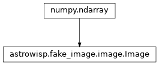

astrowisp.fake_image.image module
Class Inheritance Diagram
Defines a base class for fake star images.
- class astrowisp.fake_image.image.Image(x_resolution, y_resolution, background=0.0)[source]
Bases:
ndarrayA base class for fake images.
- static __new__(cls, x_resolution, y_resolution, background=0.0)[source]
Create an image with the given resolution and background.
- add_source(x, y, amplitude, psf=None, prf=None, subpix_map=array([[1.]]))[source]
Adds a source to this image.
- Parameters:
x – The x coordinate of the center of the new source relative to the lower left corner of the image.
y – The x coordinate of the center of the new source relative to the lower left corner of the image.
amplitude – The amplitude to scale the PSF by.
psf – The PSF to use for the new source. Should be of some type inherited from fake_image.psf or None if PRF is used instead.
prf – The pixel response function (PRF) to use for the new source. Should be of some type inherited from fake_image.psf or None if PSF is used instead. The pixel response function is the PSF convolved with the pixel sensitivity map.
subpix_map – The sub-pixel sensitivity map. Should be a numpy.ndarray of some sort (i.e. provide shape attribute and subscripting).
- Returns:
None